Economy of Cuba
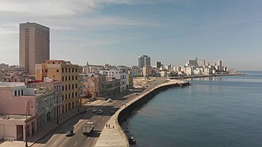 Havana, the capital and financial center of Cuba | |
| Currency | Cuban peso (CUP) |
|---|---|
| Calendar year | |
Country group | Developing/emerging[1] Upper-middle income economy[2] |
| Statistics | |
| Population | 10,979,783 (2024)[3] |
| GDP | $107.35 billion (nominal, 2020)[4] |
| GDP rank | 55th (nominal, 2020) |
GDP per capita | $9,605 (nominal, 2020)[5] |
GDP per capita rank | 77th (nominal, 2020) |
| -0.7% (2024)[6] | |
GDP by sector |
|
| 0.380 (2000 est.)[8] | |
Labor force | |
| 4.3% (2024)[14] | |
Main industries | Petroleum, nickel, cobalt, pharmaceuticals, tobacco, construction, steel, cement, agricultural machinery, sugar |
| External | |
| Exports | $2.63 billion (2017 est.)[12] |
Export goods | Petroleum, nickel, medical products, sugar, tobacco, fish, citrus, coffee |
Main export partners | |
| Imports | $2.06 billion (2017 est.)[12] |
Import goods | Petroleum, food, machinery and equipment, chemicals |
Main import partners |
|
FDI stock | |
| $985.4 million (2017 est.)[12] | |
Gross external debt | $30.06 billion (31 December 2017 est.)[12] |
| Public finance | |
| 47.7% of GDP (2017 est.)[12] | |
| $11.35 billion (2017 est.)[12] | |
| −10.8% (of GDP) (2017 est.)[12] | |
| 54.52 billion (2017 est.)[12] | |
| 64.64 billion (2017 est.)[12] | |
| Economic aid | $88 million (2005 est.) |
All values, unless otherwise stated, are in US dollars. | |

Cuba has a developing command economy dominated by state-run enterprises. The Communist Party of Cuba maintains high levels of public sector control and exerts significant influence over the Cuban economy. The island has a low cost of living, inexpensive public transport, as well as subsidized education, healthcare, and food. Cuba's economic growth has historically been weak due to high labour emigration, import dependency, an ongoing energy crisis, foreign trade sanctions, and limited tourism in Cuba. Cuba is one of the poorest countries in Latin America and the Caribbean with high inflation, food shortages, and extreme poverty. It is heavily indebted due to its large public sector and high deficit spending, with a global sovereign debt burden.[17]
In the 19th century, Cuba was one of the most prosperous pre-industrial Latin American countries with the export of tobacco, sugar, and coffee. At the Cuban Revolution of 1953–1959, during the military dictatorship of Fulgencio Batista, Cuba was on a growth trajectory within Latin America. During the Cold War, the Cuban economy was heavily subsidized – 10% to 40% of Cuban GDP in various years – by the Eastern Bloc, due to their geopolitical alignment with the Soviet Union.[18] Cuba endured severe economic downturn when the Soviet Union collapsed, with GDP declining 33% between 1990 and 1993. A protracted economic malaise known as the Special Period overcame Cuba from 1991 to 2001. The Cuban economy rebounded in 2003 with marginal liberalization and foreign support from Venezuela, China, and Russia.[18] The United States has maintained an economic embargo against Cuba since 1960 due to geopolitical tensions.
History
[edit]
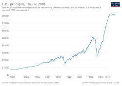
Colonial and Republican period (1870–1959)
[edit]Although Cuba belonged to the high-income countries of Latin America since the 1870s, income inequality was high, accompanied by capital outflows to foreign investors.[19] In the early half of the 20th century sugar, tobacco, and coffee exports, along with tourism from the U.S. provided the country with rapid growth.[20]
Before the Cuban Revolution, in 1958, Cuba had a per-capita GDP of $2,363, which placed it in the middle of Latin American countries at the time, according to the Maddison Project.[21] PBS quotes a better ranking for Cuba of 5th in the Western Hemisphere during the early 20th century, and gives high ratings for life expectancy, literacy and per capita ownership of automobiles, telephones, and television sets.[22] According to the UN, between 1950 and 1955, Cuba had a life expectancy of 59.4 years, which placed it in 56th place in the global ranking.[23]
Its proximity to the United States made it a familiar holiday destination for wealthy Americans. Their visits for gambling, horse racing, and golfing[24] made tourism an important economic sector. Tourism magazine Cabaret Quarterly described Havana as "a mistress of pleasure, the lush and opulent goddess of delights".[24] Cuban dictator Fulgencio Batista had plans to line the Malecon, Havana's famous walkway by the water, with hotels and casinos to attract even more tourists. The country was highly dependent on its sugar production.[25]: 38
In the late 1950s, Cuba's oil sector was controlled by three large international oil companies: Standard Oil of New Jersey (Esso), Texaco, and Royal Dutch Shell.[26]: 39
Revolutionary era (1959–present)
[edit]The Cuban Revolution under the leadership of Fidel Castro brought a sharp break with earlier economic, social and political policies in Cuba, introducing a planned state-run command economy, an alliance with the Soviet Bloc, and a trade embargo by the United States that ended trade and tourism with that country. Cuba moved down the world income distribution after the revolution and as of 2012, per capita income appear to be below the peak of Cuba's pre-revolutionary levels.[27]
Early economic planning (1959–1967)
[edit]On 3 March 1959, Fidel Castro seized control of the Cuban Telephone Company, which was a subsidiary of the International Telephone and Telecommunications Corporation. This was the first of many nationalizations made by the new government; the assets seized totaled US$9 billion.[28]
After the 1959 Revolution, citizens were not required to pay a personal income tax.[29] The government also began to subsidize healthcare and education for all citizens; this action created strong national support for the new revolutionary government.
The USSR and Cuba reestablished their diplomatic relations in May 1960. When oil refineries like Shell, Texaco, and Esso refused to refine Soviet oil, Castro nationalized that industry as well, taking over the refineries on the island.[30] Days later in response, the United States cut the Cuban sugar quota completely; Eisenhower was quoted saying "This action amounts to economic sanctions against Cuba. Now we must look ahead to other economic, diplomatic, and strategic moves."[30] Cuba and the Soviet Union signed their first trade deal that year, in which Cuba traded sugar to the Soviet Union in exchange for fuel.[26]: 2 On 7 February 1962, Kennedy expanded the United States embargo to cover almost all U.S. imports.[31]
Using machinery and equipment provided by the Soviet Union and other socialist countries, from 1959 to 1963, the Cuban government attempted to implement import substitution industrialization.[25]: 35 This approach was deemed to have failed by 1964 and Cuba resumed an export strategy focused on sugar.[25]: 38–39 The economy remained inefficient and over-specialized in a few commodities purchased by the Eastern Bloc countries.[32]
By the late 1960s, Cuba became dependent on Soviet economic, political, and military aid. It was also around this time that Castro began privately believing that Cuba could bypass the various stages of socialism and progress directly to pure communism.[33] General Secretary Leonid Brezhnev consolidated Cuba's dependence on the USSR when, in 1973, Castro caved to Brezhnev's pressure to become a full member of Council for Mutual Economic Assistance (Comecon).[34] Comecon deemed Cuba one of its underdeveloped member countries and therefore Cuba could obtain oil in direct exchange for sugar at a rate that was highly favorable to Cuba.[26]: 41 Hard currency Cuba obtained from re-exporting oil facilitated Cuba's importation of goods from non-Comecon countries and facilitated its investments in social services.[26]: 57
1968–1990
[edit]In 1970 as part of the Revolutionary Offensive economic campaign, Fidel Castro attempted to motivate the Cuban people to harvest 10 million tons of sugar, in Spanish known as La Zafra, to increase their exports and grow their economy.[26]: 37–38 Despite the help of most of the Cuban population, the country fell short and produced only 7.56 million tons.[35] In July 1970, after the harvest was over, Castro took responsibility for the failure, but later that same year, shifted the blame toward the Sugar Industry Minister saying "Those technocrats, geniuses, super-scientists assured me that they knew what to do to produce the ten million tons."[36]
During the Revolutionary period, Cuba was one of the few developing countries to provide foreign aid to other countries. Foreign aid began with the construction of six hospitals in Peru in the early 1970s.[37] Between 1970 and 1985, Cuba sustained high rates of growth: [Cuba] was actually following the World Bank recipe from the 1970s: redistribution with growth".[38] Foreign aid expanded later in the 1970s to the point where some 8000 Cubans worked in overseas assignments. Cubans built housing, roads, airports, schools, and other facilities in Angola, Ethiopia, Laos, Guinea, Tanzania, and other countries. By the end of 1985, 35,000 Cuban workers had helped build projects in some 20 Asian, African, and Latin American countries.[37]
For Nicaragua in 1982, Cuba pledged to provide over $130 million worth of agricultural and machinery equipment and some 4000 technicians, doctors, and teachers.[37] Over the course of the 1980s, Cuba provided approximately 90,000 tons of oil to Nicaragua per year to support the Sandinista revolution.[26]: 58 From 1986 through 1990, Fidel Castro began the Rectification Process in an effort to decrease market elements in the economy.[25]: 28
In 1986, Cuba defaulted on its $10.9 billion debt to the Paris Club. In 1987, Cuba stopped making payments on that debt. In 2002, Cuba defaulted on $750 million in Japanese loans.[39]
The 1980s was an era of low poverty. In the mid-80s, no more than 6% of Cubans were poor (poverty being defined as a state of not being able to satisfy basic needs with earned income). In comparison, the poverty rate throughout Latin America in that era averaged more than 40%, and in some countries more than 70%.[40]
Special Period (1991–1994)
[edit]
In 1991 an extended period of economic crisis began in Cuba primarily due to the dissolution of the Soviet Union and the Comecon.[41] This era was referred to as the "Special Period in Peacetime",[26]: 84 lateusly in 1990 and 1991 and did not recover for five years. Cuba had been insulated from world sugar prices by Soviet price guarantees.[42]
Malnutrition resulted in an outbreak of diseases.[42] Although the collapse of centrally planned economies in the Soviet Union and other countries of the Eastern bloc subjected Cuba to severe economic difficulties, which led to a drop in calories per day from 3052 in 1989 to 2600 in 2006, mortality rates were not strongly affected thanks to the priority given on maintaining a social safety net.[43] The Cuban economy began to improve again following a rapid improvement in trade and diplomatic relations between Cuba and Venezuela following the election of Hugo Chávez in Venezuela in 1998, who became Cuba's most important trading partner and diplomatic ally.[42]
Reforms and recovery (1994–2011)
[edit]
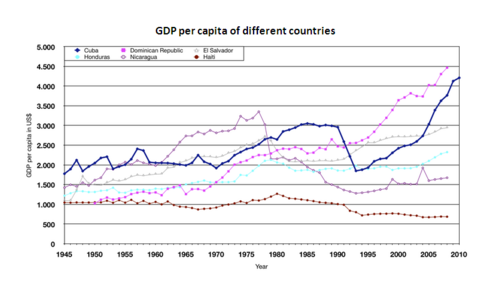
The government undertook several economic reforms to stem excess liquidity, increase labor incentives, and alleviate serious shortages of food, consumer goods, and services. To alleviate the economic crisis, the government introduced a few market-oriented reforms, including opening to tourism, allowing foreign investment, legalizing the U.S. dollar, and authorizing self-employment for some 150 occupations. These measures resulted in modest economic growth. The liberalized agricultural markets were introduced in October 1994, at which state and private farmers sell above-quota production at free market prices, broadened legal consumption alternatives, and reduced black market prices.
Government efforts to lower subsidies to unprofitable enterprises and to shrink the money supply caused the semi-official exchange rate for the Cuban peso to move from a peak of 120 to the dollar in the summer of 1994 to 21 to the dollar by year-end 1999. The drop in GDP halted in 1994 when Cuba reported 0.7% growth, followed by increases of 2.5% in 1995 and 7.8% in 1996. Growth slowed again in 1997 and 1998 to 2.5% and 1.2% respectively. One of the key reasons was the failure to notice that sugar production had become uneconomic. Reflecting on the Special Period, First Secretary of the Communist Party of Cuba Fidel Castro later admitted that many mistakes had been made, "The Soviet Union collapsed, oil cost $40 a barrel, and sugar prices were at basement levels, so why did we not rationalize the industry?"[44] Living conditions in 1999 remained well below the 1989 level.
Due to the continued growth of tourism, growth began in 1999 with a 6.2% increase in GDP.[45][self-published source?] Growth then picked up, with a growth in GDP of 11.8% in 2005 according to government figures.[46] In 2007 the Cuban economy grew by 7.5%, higher than the Latin American average. Accordingly, the cumulative growth in GDP since 2004 stood at 42.5%.[47][48][clarification needed]
Starting in 1996, the government imposed income taxes on self-employed Cubans.[29] Cuba ranked third in the region in 1958 in GDP-per-capita, surpassed only by Venezuela and Uruguay. It had descended to 9th, 11th, or 12th place in the region by 2007. Cuban social indicators suffered less.[49]
Every year the United Nations holds a vote asking countries to choose if the United States is justified in its economic embargo against Cuba and whether it should be lifted. 2016 was the first year that the United States abstained from the vote, rather than voting no, "since 1992 the US and Israel have constantly voted against the resolution – occasionally supported by the Marshall Islands, Palau, Uzbekistan, Albania and Romania".[50] In its 2020 report to the United Nations, Cuba stated that the total cost to Cuba from the United States embargo is $144 billion since its inception.[51]
Post-Fidel Castro reforms (2011–2021)
[edit]Either we change course or we sink.
In 2011, "[t]he new economic reforms were introduced, effectively creating a new economic system", which the Brookings Institution dubbed the "New Cuban Economy".[53][54] Since then, over 400,000 Cubans have signed up to become entrepreneurs. As of 2012[update] the government listed 181 official jobs no longer under their control—such as taxi driver, construction worker and shopkeeper. Workers must purchase licenses to work for some roles, such as a mule driver, palm-tree trimmer, or well digger.
Around 2000, half the country's sugar mills closed. Before reforms, imports were double exports, doctors earned £15 per month, and families supplemented incomes with extra jobs. After reforms, more than 150,000 farmers could lease land from the government for surplus crop production. Before the reforms, the only real estate transactions involved homeowners swapping properties; reforms legalized the buying and selling of real estate and created a real estate boom in the country. In 2012 a Havana fast-food burger/pizza restaurant, La Pachanga, started in the owner's home; as of 2012[update] it served 1,000 meals on a Saturday at £3 each. Tourists can now ride factory steam locomotives through closed sugar mills.[55]
In 2008, Raúl Castro's administration hinted that the purchase of computers, DVD players, and microwaves would become legal.[needs update] Monthly wages remain less than 20 U.S. dollars.[56] Mobile phones, which had been restricted to Cubans working for foreign companies and government officials, were legalized in 2008.[56] In 2010 Fidel Castro, in agreement with Raúl Castro's reformist sentiment, admitted that the Cuban model based on the old Soviet centralized planning model was no longer sustainable. The brothers encouraged the development of a cooperative variant of socialism – where the state plays a less active role in the economy – and the formation of worker-owned co-operatives and self-employment enterprises.[57]
To remedy Cuba's economic structural distortions and inefficiencies, the Sixth Congress approved an expansion of the internal market and access to global markets on 18 April 2011. A comprehensive list of changes is:[58][59]
.jpg){kind=link}
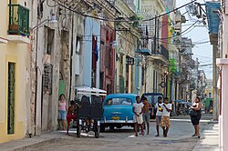
_(5973629085).jpg){kind=link}
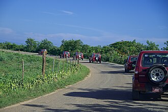
- expenditure adjustments (education, healthcare, sports, culture)
- change in the structure of employment; reducing inflated payrolls and increasing work in the non-state sector
- legalizing 201 different personal business licenses
- fallow state land in usufruct leased to residents
- incentives for non-state employment, as a re-launch of self-employment
- proposals for the formation of non-agricultural cooperatives
- legalization of the sale and private ownership of homes and cars
- greater autonomy for state firms
- search for food self-sufficiency, the gradual elimination of universal rationing and change to targeting the poorest population
- possibility to rent state-run enterprises (including state restaurants) to self-employed persons
- separation of state and business functions
- tax-policy update
- easier travel for Cubans
- strategies for external debt restructuring
On 20 December 2011, a new credit policy allowed Cuban banks to finance entrepreneurs and individuals wishing to make major purchases to make home improvements in addition to farmers. "Cuban banks have long provided loans to farm cooperatives, they have offered credit to new recipients of farmland in usufruct since 2008, and in 2011 they began making loans to individuals for business and other purposes".[60]
The system of rationed food distribution in Cuba was known as the Libreta de Abastecimiento ("supplies booklet"). As of 2012[update] ration books at bodegas still procured rice, oil, sugar, and matches above the government average wage of £15 monthly.[61] Raúl Castro signed Law 313 in September 2013 to set up a special economic zone, the first in the country, in the port city of Mariel.[62] The zone is exempt from normal Cuban economic legislation.[26]: 159 On 22 October 2013, the government eventually announced its intention to end the dual-currency system.[63] The convertible peso (CUC) was no longer issued from 1 January 2021 and ceased circulation on 30 December 2021.
In February 2019, Cuban voters approved a new constitution granting the right to private property and greater access to free markets while also maintaining Cuba's status as a socialist state.[64][65] In June 2019, the 16th ExpoCaribe trade fair took place in Santiago.[66] Since 2014, the Cuban economy has seen a dramatic uptick in foreign investment.[67] In November 2019, Cuba's state newspaper, Granma, published an article acknowledging that despite the deterioration in relations between the U.S. and Cuban governments, the Cuban government continued to make efforts to attract foreign investment in 2018.[68] In December 2018, the official Cuban News Agency reported that 525 foreign direct investment projects were reported in Cuba, a dramatic increase from the 246 projects reported in 2014.[69]
Modern Cuban economy (2021–present)
[edit]_-_4.jpg){kind=link}
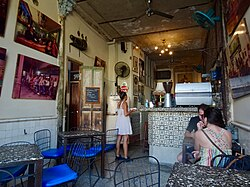
Cuba's GDP dropped more than 10% from 2018 to 2024.[70] The modern Cuban economy continues to face challenges related to an ongoing energy crisis, foreign trade sanctions, and limited tourism. The Cuban economy was negatively affected by the COVID-19 pandemic from 2020 to 2022, with sudden drops in remittances and tourism. In February 2021, the Cuban government authorized private initiatives in more than 1,800 occupations.[71]
In 2020, the country's economy declined by 11%, the country's worst decline in nearly 30 years.[72] Cubans have faced shortages of basic goods as a result.[73] The Cuban economy received large-scale foreign investment from Venezuela, China and Russia, while the United States sharply tightened their embargo against Cuba in 2025. Cuba has been in an economic recession since 2020, with GDP contracting 1.1% and inflation at 24% in 2024.[74] The halt of Venezuelan oil shipments, following the United States' intervention in Venezuela in January 2026, worsened Cuba's severe energy crisis.[75]
Migration
[edit]Outbound migration from Cuba has had a negative impact on its economy. Albizu-Campos notes that revolutionary Cuba has had a number of mass emigrations — "such as El Mariel in 1980 (125,000), the Balseros Crisis in 1994 (34,500) and Boca de Camarioca in 1965 (about 5,000)"[70] — but that departures from Cuba beginning in October 2021, particularly to the United States, far exceeding previous migrations,[70] and has been called "devastating" for the Cuban economy.[76] Causes include the economic sanctions of the Trump administration, COVID pandemic, and economic mismanagement,[70] as well as the desire for greater opportunities abroad.[77] Among the effects of the migration of working-age population on Cuba are less economic development, a strain on the country's pension system and increased caregiving burdens for the elderly and young who remain in Cuba.[77][76]
Sectors
[edit]Energy
[edit]Cuba burns 100,000 barrels of oil daily to supply electricity (15 TWh in 2023), with small contributions from other sources.[78][79] About 25% of Cuba's electricity is generated on ships with floating power plants. As of 2023, eight powerships from Turkey provided 770 MW from burning oil.[80]
As of 2011, 96% of electricity was produced from fossil fuels. Solar panels were introduced in some rural areas to reduce blackouts, brownouts, and the use of kerosene. Citizens were encouraged to swap inefficient lamps with newer models to reduce consumption. A power tariff reduced inefficient use.[81] In 2007, Cuba produced an estimated 16.89 billion kWh of electricity and consumed 13.93 billion kWh with no exports or imports, as the island is not connected to other areas.[82]

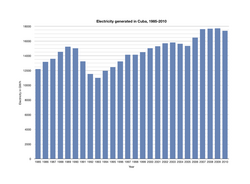
The Energy Revolution is a program begun by Cuba in 2005.[26]: 4 This program focused on developing the country's socioeconomic status and transitioning Cuba into an energy-efficient economy with diverse energy resources.[83] Cuba's energy sector lacks the resources to produce optimal amounts of power. One of the issues the Energy Revolution program faces comes from Cuba's power production suffering from the absence of investment and the ongoing trade sanctions imposed by the United States.[84] Likewise, the energy sector has received a multimillion-dollar investment distributed among a network of power resources. However, customers are experiencing rolling blackouts of power from energy companies to preserve electricity during Cuba's economic crisis.[84]
Furthermore, an outdated electricity grid (losing 16% in transmission)[85] that's been damaged by hurricanes caused the energy crisis in 2004 and continued to be a major issue during the Energy Revolution.[83] Cuba responded to this situation by providing a variety of different types of energy resources. 6000 small diesel generators, 416 fuel oil generators, 893 diesel generators, 9.4 million incandescent bulbs for energy-saving lamps, 1.33 million fans, 5.5 million electric pressure cookers, 3.4 million electric rice cookers, 0.2 million electric water pumps, 2.04 million domestic refrigerators and 0.1 million televisions were distributed among territories.[86] The electrical grid was restored to only 90% until 2009.
The country frequently suffers rolling blackouts due to fuel shortages, and many plants are shut down due to a lack of fuel. In October 2024, the entire country suffered a multiday electricity blackout when the Antonio Guiteras power plant failed and efforts to restart the grid were not successful.[87][88]
Renewables
[edit]Renewable energy has become a major priority as the government has promoted wind and solar power.[89] Under a March 2017 law, the Cuban government has begun to roll out solar panels to every home in Cuba.[90]: 95 The crucial challenge the Energy Revolution program will face is developing sustainable energy in Cuba while also accounting for the challenges presented by economic sanctions, the detrimental effects of hurricanes that hit the country, and the nature of Cuba as a developing nation.[86]
The passage of Decree-Law 345 in 2019 permits Cubans to purchase photovoltaic solar panels for private use and to sell surplus energy to state company Unión Eléctrica.[26]: 159 In response to the tightening of United States sanctions on fuel imports and the ensuing energy crisis in 2024 and 2025, Cuba rapidly accelerated its transition to renewable energy.[91] In 2022, about 1.5% of electricity came from solar power.[92] By 2025, renewable energy supplied approximately 10% of Cuba's electricity, up from 3.6% the previous year.[93] Between early 2025 and early 2026, the country connected 49 new solar parks to the national grid, adding over 1,000 megawatts (MW) of capacity.[94]
The expansion is heavily supported by financing and equipment from China. In December 2024, Havana and Beijing signed agreements to build seven solar parks with a combined capacity of 35 MW.[95] Under the National Energy Transition Strategy, the Cuban government aims to construct 92 solar parks by 2028, projecting an addition of 2,000 MW (2 gigawatts) of solar capacity, which is nearly equivalent to the country's entire fossil fuel generation capacity.[96][97] The country also set targets to increase renewables to 26% of its total energy supply by 2035.[98] Wind energy development includes the construction of the La Herradura 1 and La Herradura 2 wind farms in Las Tunas province, with capacities of 33 MW and 50 MW respectively, built with Chinese backing.[85][99]
Despite the rapid deployment of solar infrastructure, challenges remain. A lack of utility-scale battery storage limits the effectiveness of solar power during peak evening demand hours, and the modernization of Cuba's ageing electrical grid, which loses an estimated 16% of electricity in transmission, requires significant capital investment that the state struggles to afford.[100] However the potential for renewables is significant. A 2026 academic study published in Renewable and Sustainable Energy Transition projected that Cuba could achieve 93% of its electricity from renewable sources by 2050 through a combination of 13,000 gigawatt-hours (GWh) of solar energy and 11,000 GWh of wind energy.[101]
Oil and gas
[edit]
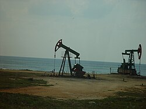
From 1960 to 1990, the Soviet Union provided Cuba with all of its oil needs on credit (which was not paid back) and at subsidized prices.[25]: 24 As of August 2012, off-shore petroleum exploration of promising formations in the Gulf of Mexico had been unproductive, with two failures reported. Additional exploration is planned.[102]
In both 2007 and 2008 estimates, the country produced 62,100 bbl/d of oil and consumed 176,000 bbl/d with 104,800 bbl/d of imports, as well as 197,300,000 bbl proved reserves of oil.[82] Venezuela is Cuba's primary source of oil, interrupted by the 2026 United States intervention in Venezuela,[103] when Mexico provided some oil for a while.[104][85]
In 2017, Cuba produced and consumed an estimated 1189 million m3 of natural gas and has 70.79 billion m3 of proved reserves. The nation did not export or import any natural gas.[82]
Agriculture
[edit]
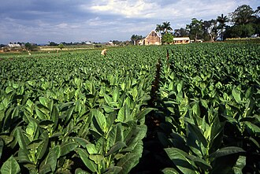
Cuba produces sugarcane, tobacco, citrus, coffee, rice, potatoes, beans, and livestock.[82] As of 2015, Cuba imported about 70–80% of its food[105] and 80–84% of the food it rations to the public.[106] Raúl Castro ridiculed the bureaucracy that shackled the agriculture sector.[106]
Industry
[edit]Industrial production accounted for almost 37% of Cuban GDP or US$6.9 billion and employed 24% of the population, or 2,671,000 people, in 1996.[107] A rally in sugar prices in 2009 stimulated investment and development of sugar processing.
Biotechnology and pharmaceutics
[edit]In the 1980s, Cuban scientists developed a vaccine against a strain of bacterial meningitis B, which eliminated what had been a serious disease on the island. The Cuban vaccine is used throughout Latin America.[108] The Center of molecular immunology (CIM) developed nimotuzumab, a monoclonal antibody used to treat cancer. Nimotuzumab is an inhibitor of epidermal growth factor receptor (EGFR), which is over-expressed in many cancers. Nimotuzumab is now being developed with international partners. In 2003 Cuba's biotechnology and pharmaceutical industry was gaining in importance.[109] Among the products sold internationally are vaccines against various viral and bacterial pathogens.[110] Cuba has done pioneering work on the development of drugs for cancer treatment.[111]
During the COVID-19 pandemic, Cuba developed two COVID-19 vaccines. Soberana 02 is produced by the Pasteur Institute of Iran and the Finlay Institute, a Cuban epidemiological research institute.[112] Abdala was developed by the Center for Genetic Engineering and Biotechnology in Cuba.[113] Cuba's biotechnology sector developed in response to the limitations on technology transfer, international financing, and international trade resulting from the United States embargo.[90]: 120 The Cuban biotechnology sector is entirely state-owned.[90]: 120
Construction
[edit]Defense
[edit]Tobacco
[edit]Services
[edit]Banking
[edit]This article discusses banking in Cuba and gives an overview of the recent past. For details on the Cuban economy in general, see economy of Cuba.
Education
[edit]Education in Cuba has been a highly ranked system for many years. Following the Cuban Revolution in 1959, the government under Fidel Castro nationalized all educational institutions, and created a government operated system. Illiteracy was eliminated through the campaign. Education expenditures continue to receive high priority.[114] The mean average years of schooling in Cuba is 11.8, as of 2025.

The University of Havana was founded in 1728 and there are a number of other well-established colleges and universities.
Healthcare
[edit]The Cuban government operates a national health system and assumes fiscal and administrative responsibility for the health care of all its citizens.[115] All healthcare in Cuba is free to Cuban residents.[116] There are no private hospitals or clinics as all health services are government-run.
Like the rest of the Cuban economy, Cuban medical care suffered following the end of Soviet subsidies in 1991. The United States embargo against Cuba also has an effect.[117] Difficulties include low salaries for doctors, poor facilities, poor provision of equipment, and the frequent absence of essential drugs.[118][119]
The Cuban healthcare system has emphasized the export of health professionals through international missions, aiding global health efforts. However, while these missions generate significant revenue and serve as a tool for political influence, domestically, Cuba faces challenges including medication shortages and disparities between medical services for locals and foreigners.[120] Despite the income from these missions, only a small fraction of the national budget has been allocated to public health, underscoring contrasting priorities within the nation's healthcare strategy.[120]
Housing
[edit]As of late 2023, Havana Times reported a total housing stock of 3.8 million properties in Cuba, with deficit of more than 855,000 units, and approximately 40% of the 3.8 million units in "fair or poor condition".[121] Economist Ricardo Torres, reports that of the large number of Soviet-built public apartment blocks that provide housing, as of early 2026, approximately half will require reconstruction.[122] New housing is being constructed in Cuba, at a rate much below the growth of population.[123]
As of late 2019, about 85% of Cubans own their own homes and the land it sits on. These are Cubans who were renting housing from landlords whose buildings were expropriated by the state in 1960, and who have paid rent on that housing for twenty years.[123] In October 2011 the 1988 General Housing Act was amended to allow the sale and purchase of homes by Cuban citizens and foreign residents.[124] Residential rental properties in Cuba that are owned and managed by the state typically have heavily subsidized rent significantly lower than market rates in other countries to ensure affordability for renters. It has lead to complaints of deterioration of housing because maintenance and renovation due to insufficient funds.[125]
Retail and hospitality
[edit]Cuba has a small retail sector. A few large shopping centers operated in Havana as of September 2012 but charged US prices. Pre-Revolutionary commercial districts were largely shut down. Most stores are small dollar stores, bodegas, agro-mercados (farmers' markets), and street stands.[126]
Telecommunications
[edit]Telecommunications in Cuba consists mainly of NTSC analog television, analog radio, telephony, AMPS, D-AMPS, and GSM mobile telephony, and the Internet. Telephone service is provided through ETECSA (Telecommunications Company of Cuba), mobile telephone service is provided through the Cellular Telephone Company of Cuba (CUBACEL) and, previously, Caribbean Cellular (Celulares del Caribe, C-COM - no longer operating). Cuba's main international telecommunications links are through Intersputnik, with limited effectiveness of undersea telephone cables to the Americas, Spain, and possibly Italy due to underdevelopment.[127]
Tourism
[edit]
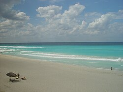
In the mid-1990s, tourism surpassed sugar, the mainstay of the Cuban economy, as the primary source of foreign exchange. Havana devotes significant resources to building tourist facilities and renovating historic structures. Cuban officials estimate roughly 1.6 million tourists visited Cuba in 1999, yielding about $1.9 billion in gross revenues. In 2000, 1,773,986 foreign visitors arrived in Cuba. Revenue from tourism reached US$1.7 billion.[128] By 2012, some 3 million visitors brought nearly £2 billion yearly.[129]
The growth of tourism has had social and economic repercussions. This led to speculation of the emergence of a two-tier economy and the fostering of a state of tourist apartheid.[130]
Transport
[edit]Water supply and sanitation
[edit]Water supply and sanitation in Cuba is characterized by a high level of access. A state-owned enterprise is in charge of providing services throughout the country within the country's socialist, centrally planned Cuban economic system. As a surprising exception in a Socialist country, a mixed public-private company with partial foreign ownership provides services in parts of Havana.
International trade
[edit].svg.png)
.svg){kind=link}
Cuba's principal merchandise exports in 2022 were nickel oxide sinters and other intermediate nickel products, rum, cigars, unwrought zinc and raw cane sugar. The country exported US$2.2 billion worth of goods, with Spain, China, Germany and France as its largest identified export markets. However, the destination of approximately 59% of exports was unspecified.[131]
Merchandise imports amounted to US$9.8 billion in 2022. The largest imported products were frozen chicken cuts and offal, wheat and meslin, broken rice, refined soybean oil and crude sulphur. China, Spain, the United States and Argentina were the largest identified import partners.[131]
Foreign investment
[edit]
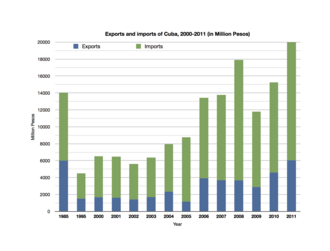
The U.S. embargo against Cuba serves as an international deterrent to foreign investment.[132] Within Cuba itself, foreign ownership in land is prohibited; foreign entities are only allowed to rent land.[25]: 31 Cuba began courting foreign investment in the Special Period during the 1990s. Foreign investors must form joint ventures with the Cuban government. Cuban officials said in early 1998 that 332 joint ventures had begun. Many of these are loans or contracts for management, supplies, or services normally not considered equity investments in Western economies. In 2017, the country reported a record $2 billion in foreign investment.[67] It was reported that foreign investment in Cuba had increased from 2014 to 2019.[67] In September 2019, EU foreign policy chief Federica Mogherini stated during a three-day visit to Cuba that the European Union is committed to helping Cuba develop its economy.[133]
In 2023, Canada receives the largest share of Cuban exports (30.6%) – 70 to 80% of which go through Indiana Finance BV, a company owned by the Dutch Van 't Wout family, who have close personal ties with Fidel Castro.[134] This trend can be seen in other colonial Caribbean communities with direct political ties with the global economy.
Support from Venezuela
[edit]
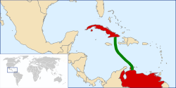
Venezuela is the largest trading partner to Cuba and is widely considered to be systemically important to the Cuban economy.[135][136] Since the 1990s, the two nations have shared a close relationship and have maintained strong economic collaboration.[137][138] Initial trading was centered on exchanging Venezuelan oil for visiting Cuban doctors in a form of medical diplomacy.[139][140] Venezuelan investors are the only foreign investor allowed to hold 100% ownership in businesses, with all other foreign investors requiring joint investment with Cuba. According to Carmelo Mesa-Lago, a Cuban-born U.S. economist, in nominal terms, the Venezuelan subsidy is higher than the subsidy which the Soviet Union gave to Cuba.[136] In 2012, Venezuela accounted for 20.8% of Cuba's GDP, while Cuba only accounted for roughly 4% of Venezuela's.[141] The Venezuelan economy has been in complete collapse since 2010, hampering its ability to support Cuba.[142][143] The U.S. military intervention in Venezuela in 2026 resulted in a blockade of oil tankers around Cuba, halting Venezuelan oil imports to the island.[144]
Support from China
[edit]China has been the second-largest trade partner to Cuba, with a 16.9% share of the Cuban export market.[134][145] The trade relationship between the two nations has been mixed, with the Chinese government routinely entering, and then promptly exiting, trade agreements with Cuba.[146] From 2017 to 2022, bilateral trade has contracted 33% due to a lack of foreign investment protection for Chinese capital.[146] Following the collapse of the Cuban sugar industry in 2024, China suspended their yearly 400,000-ton sugar order.[146] Cuba entered into the Chinese-led Cross-Border Interbank Payment System (CIPS) in 2025, expanding their access to international payment processing.[146]
Support from Russia
[edit]Russia has maintained a special relationship with Cuba since the Soviet Union, first trading Cuban sugar in exchange for Soviet energy.[26]: 2 In 2025, the Russian government pledged $1 billion in economic aid to Cuba, spanning to 2030, focusing on infrastructure and oil.[147] Russia has made strategic investments into the Cuban energy and tourism sectors, with nearly 100,000-tons of Russian oil heading to Cuba in 2025.[147] During the Russian invasion of Ukraine, the Cuban government sought access to Russia's war economy by offering 20,000 Cuban mercenaries for remittance income.[148]
Currencies
[edit]Cuba maintains the Cuban peso as its official currency.[149] The nation's currency is on a floating-rate exchange, the value of the peso fluctuates given demand and supply.[149] The Cuban government facilitates an official exchange rate of US$1 for every 24 CUP.[149] Within the informal market, the exchange rate has sharply devalued, reflecting a semi-dollarized economic system alongside the U.S. dollar.[149]
Public sector
[edit]As of 2018, the public sector accounted for 90.8% of the Cuban economy and 67% of employment.[25]: 4
Cuba used a planned economy with state-ownership over the large majority of the means of production.[25]: 18 The public sector thus contributes to the majority of economic activity, with the Cuban government encouraging the formation of worker co-operatives and self-employment since the 1990s.[64] It later legalized limited private property and free-market rights along with foreign direct investment in 2018.[65][67] Cuba describes these revisions to its economic model as the "updated" model.[25]: 18
Public sector employment remains high compared to the private sector but has steadily decreased since the 1980s.[150][151] All public and most private investment activity requires government approval or oversight.[73][68] Economic data published by the Cuban government is not always independently verified, limiting Cuba's inclusion on economic rankings in Latin America.
The state retains land in usufruct, a type of legal ownership.[25]: 31
Private sector
[edit]As of 2023[update], public-sector employment was 65%, and private-sector employment was 35%, compared to the 2000 ratio of 76% to 23% and the 1981 ratio of 91% to 8%.[73][150][151] Cuba differs from some other Communist economies such as Vietnam and China, where the private sector is large and thriving, in that in Cuba private enterprises are considered to be complementary to the large state enterprises that dominate its economy.[152]
Owners of small private restaurants (paladares) originally could seat no more than 12 people and can only employ family members.[153] Set monthly fees must be paid regardless of income earned, and frequent inspections yield stiff fines when any of the many self-employment regulations are violated. As of 2012, more than 150,000 farmers had signed up to lease land from the government for bonus crops. Before, homeowners were only allowed to swap; once buying and selling were allowed, prices rose.[61]
In February 2021, the government said that it would allow the private sector to operate in most sectors of the economy, with only 124 activities reserved for the public sector,[73] such as national security, health, and educational services.[154] In August 2021, the Cuban government started allowing citizens to create small and medium-sized private companies, which are allowed to employ up to 100 people. As of 2023, 8,000 companies have been registered in Cuba.[150][155]
Public finances
[edit]Information on Cuba's financial condition is limited due to inaccessibility of financial data published by the Communist Party of Cuba. The Economist estimated that Cuba maintained a budget deficit of over 10% of GDP in 2024, one of highest deficit spending rates in the world.[156] The latest independently verified estimate of Cuba's foreign debt was published in 2020, with an approximate $19.7 billion in foreign debt.[157] In 2017, Cuba's debt-to-GDP ratio was estimated as 47.7%.[12]
Taxes and revenue
[edit]The Cuban government maintains a top individual income tax rate of 50% and a top corporate tax rate of 30%. An additional 4% tax is levied on wholly foreign-owned companies. During the 2009 global recession, Cuba reported $47 billion in tax revenue with $50 billion in public spending.[82]
International debt repayment
[edit]Cuba has borrowed extensively since 1959 and been heavily indebted since the 1970s and 1980s with debts incurred under Fidel Castro.[156] His brother, Raúl Castro, began a concerted effort to restructure and to ask for forgiveness of loans and debts with creditor countries following the 2009 global recession.[158][159] Since the 2010s, Cuba has defaulted on a significant amount of its sovereign debt, with large portion of their debt preemptively forgiven by many foreign creditors.[157][160]
In 2011, China forgave $6 billion in debt owed to it by Cuba.[161]
In 2013, Mexico's Finance Minister Luis Videgaray announced a loan issued by Mexico's foreign trade development bank Bancomext to Cuba more than 15 years prior was worth $487 million. The governments agreed to "waive" 70% of it, approximately $340.9 million. Cuba would repay the remaining $146.1 million over ten years.[162]

In 2014, before making a diplomatic visit to Cuba, Russian President Vladimir Putin forgave over 90% of the debt owed to Russia by Cuba. The forgiveness totaled $32 billion. A remaining $3.2 billion would be paid over ten years.[159]
In 2015, Cuba entered into negotiations over its $11.1 billion debt to 14 European nation-states of the Paris Club. In December 2015, the parties announced an agreement – Paris Club nations agreed to forgive $8.5 billion of the $11.1 billion total debt, mostly by waiving interest, service charges, and penalties accrued over the more than two decades of non-payment. The regime viewed the agreement favorably to resolve the long-standing issues and build business confidence, increasing direct foreign investment and as a preliminary step to gaining access to credit lines in Europe.[163][164]
In 2018, during a diplomatic visit to Cuba, the General Secretary of the Communist Party of Vietnam Nguyễn Phú Trọng wrote off Cuba's official debt to Vietnam. The forgiveness totaled $143.7 million.[165][166]
In 2019, Cuba once again defaulted on its Paris Club debt. Of the estimated payment due in 2019 of $80 million, Cuba made only a partial payment that left $30 million owed for that year. Cuban Deputy Prime Minister Ricardo Cabrisas wrote a letter to Odile Renaud-Basso, president of the Paris Club, noting that Cuba was aware that "circumstances dictated that we were not able to honour our commitments". He maintained that they had "the intention of settling" the payments in arrears by 31 May 2020.[167][168] In May 2020, with payments still not made, Deputy PM Cabrisas sent a letter to the fourteen Paris Club countries in the agreement requesting a "[payment] moratorium for 2019, 2020 and 2021 and a return to paying in 2022".[169] Payments had still not resumed by August 2023, with a new payment calendar still being negotiated.[170][171]
Income, wealth, welfare, poverty
[edit]
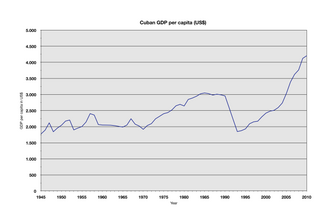

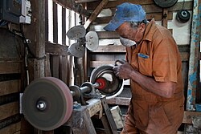
Wages
[edit]Public sector wages were increased in connection with the abolition of the Cuban convertible peso (CUC). In June 2019, the government announced an increase, especially for teachers and health personnel, by about 300%.[172]
On 1 January 2021, the government launched the "Tarea Ordenamiento" (Ordering Task), eliminating the use of the Cuban convertible peso (CUC) leaving only the Cuban peso (CUP) as currency. Wages and pensions were increased again, between 4 and 9 times, for all the public sectors. The dollar price was fixed by the Cuban central bank at 24 CUP, although Cubans could not buy dollars with pesos due to the drought of foreign currency created by the COVID-19 pandemic.[173]
The minimum wage for Cuba rose to 2,100 pesos at the same time as the Tarea Ordenamiento, and has remained there as of mid 2025. The average monthly salary, as of the end of 2024, was 5,839 pesos.[174]
Income distribution
[edit]Overall income distribution in Cuba compared favorably with that of other Latin American countries during the 19th century. "Available data must be viewed cautiously and assumed to portray merely a rough approximation of conditions at the time," according to author Susan Eckstein. There were profound social inequalities between city and countryside and between whites and blacks, with trade and unemployment problems.[175]
Statistics cited by Carmelo Mesa-Lago and Jorge Pérez-López note that between 1989 and 1999 inequality on the island increased considerably: the Gini coefficient rose from 0.250 to 0.407 and the ratio of earnings between the wealthiest 20% of Cubans and the least wealthy 20% grew from 3.8-to-1 to 13.5-to-1.[176]
The Miami Herald described levels of inequality in Cuba in 2016:
... about 27 percent of Cubans earn under $50 per month; 34 percent earn the equivalent of $50 to $100 per month; and 20 percent earn $101 to $200. Twelve percent reported earning $201 to $500 a month; and almost 4 percent said their monthly earnings topped $500, including 1.5 percent who said they earned more than $1,000.[177]
Welfare
[edit]Cuba's social welfare system elements of:
- universal free, state-financed system of public health-care;[178]
- state-financed universal education system;
- social insurance/pensions financed by state enterprises and the government;
- universal subsidies on some food;
- subsidized public housing.
Cuba has state-financed social assistance for groups that lack coverage.[178]
Social assistance
[edit]Social assistance is provided to groups deemed vulnerable including the disabled, mothers with children who have severe disabilities, and people who live alone with severe disabilities.[25]: 85 Social assistance includes, for example, monetary benefits, food, and personal services.[25]: 85 Because it is universal and free, the healthcare system already covers the poor.[25]: 86 Elderly people (age 65 for men, age 60 for women) in need, lacking a contributory pension, are provided with social assistance pensions.[25]: 85
Pensions
[edit]Cuba has a public pension system.[25]: 73 From 1959 to 1963, the government unified all pension schemes into a single state-owned fund which was initially a pay-as-you-go fund but shortly thereafter changed to being funded through the government's general budget.[25]: 77 In 1989, Cuba had the most developed pension system in Latin America.[25]: 7 In 2009, Raúl Castro increased minimum pensions by $2USD to $9.50/month.[179]
Libreta
[edit]Cuba is also known for its system of food distribution – the libreta de abastecimiento ("supplies booklet"). Established in 1962 to ensure the equitable distribution of basic goods in the wake of a newly imposed American embargo, the system provides rations each person can buy for a fraction of their value. Originally intended to cover almost all food items, by mid-2024 it provided only a fraction of what it once did, its products often arriving "late, in poor quality or not at all".[180][181]
Human development rating
[edit]While income levels in Revolutionary Cuba are low, it has traditionally pointed to its high HDI ratings (HDI being a statistical composite of life expectancy, education and per capita income indicators) made possible by rationed food, free education, universal healthcare, etc. The Human Development Index of Cuba ranked much higher than most Latin American nations in 2008.[182] Poverty levels reported by the government have traditionally been is one of the lowest in the developing world.[183]
In 2021, Cuba ranked 83rd out of 191 on the Human Development Index in the high human development category.[184] For 2023 Cuba's HDI rating was 0.762, slightly above the world rating of 0.756, but below its comparative rating in 2008 when it was among the highest in Latin America. It was now higher than some neighboring states such as Honduras, Suriname, Jamaica, but lower than Mexico, Brazil,Trinidad and Tobago and other countries.[185]
Poverty
[edit]The poverty rate in Cuba has risen since in the 1980s.
- in the 1980s it was estimated to be about 7%[186] (compared with an average of 40% in Latin America);
- by 1994 approximately 15% of Cubans were below the poverty line.[citation needed]
- 72% of Cubans lived below poverty according to a 2022 report from the Observatorio Cubano de Derechos Humanos (OCDH); 21% of these frequently going without breakfast, lunch or dinner due to a lack of money.[187]
- 89% of Cubans live in extreme poverty by 2025 according to another study by the same Observatory[188] estimates that ; about 70% of Cubans skipping some of their daily meals due to lack of means, and only 3% able to purchase medication at pharmacies.[189] According to another report by CiberCuba that same year almost 96% of Cuban families were struggling to secure sufficient nutrition, with rations covering only 20-30% of daily calories.[190][191]
See also
[edit]References
[edit]- ↑ "World Bank Country and Lending Groups". World Bank. Retrieved 29 September 2019.
- ↑ "World Bank Country and Lending Groups". World Bank. Retrieved 29 September 2019.
- ↑ "Population, total - Cuba". World Bank. Retrieved 27 January 2024.
- ↑ "World Bank Open Data: Cuba". World Bank Open Data. 1 March 2020. Retrieved 14 April 2026.
- ↑ "World Bank Open Data: Cuba". World Bank Open Data. 1 March 2020. Retrieved 14 April 2026.
- ↑ "GDP per capita growth (annual %), World Bank Group, accessed July 2025".
- ↑ Cuba: Distribution of gross domestic product (GDP) across economic sectors from 2012 to 2022
- ↑ "Cuba grapples with growing inequality". Reuters. 10 April 2008. Retrieved 16 August 2023.
- ↑ "Human Development Index (HDI)". hdr.undp.org. HDRO (Human Development Report Office) United Nations Development Programme. Retrieved 13 October 2022.
- ↑ "Inequality-adjusted Human Development Index (IHDI)". hdr.undp.org. HDRO (Human Development Report Office) United Nations Development Programme. Archived from the original on 12 December 2020. Retrieved 13 October 2022.
- ↑ "Labor force, total - Cuba". World Bank. Archived from the original on 12 August 2025. Retrieved 28 November 2019.
- Jump up to: 1 2 3 4 5 6 7 8 9 10 11 12 13 14 15 "Cuba". The World Factbook (2019 ed.). Central Intelligence Agency. Retrieved 28 November 2019.
- ↑ "Employment to population ratio, 15+, total (%) (national estimate) - Cuba". World Bank. Retrieved 28 November 2019.
- ↑ "Unemployment, youth total (% of total labor force ages 15-24)". World Bank Open Data. 2026. Retrieved 10 June 2026.
- ↑ "Export Partners of Cuba". The Observatory of Economic Complexity. Retrieved 24 February 2025.
- ↑ "Import Partners of Cuba". The Observatory of Economic Complexity. Retrieved 24 February 2025.
- ↑ "Cuba's leaders fiddle the figures". The Economist. 2 July 2025. ISSN 0013-0613. Retrieved 2 July 2025.
- Jump up to: 1 2 Mesa-Logo, Carmelo (10 March 2019). "Cómo romper con la dependencia económica de Cuba". The New York Times (in Spanish). ISSN 0362-4331. Retrieved 12 January 2023.
- ↑ Baten, Jörg (2016). A History of the World Economy. From 1500 to the Present. Cambridge University Press. p. 137. ISBN 978-1-107-50718-0.
- ↑ [Mehrotra, Santosh. (1997) Human Development in Cuba: Growing Risk of Reversal in Development with a Human Face: Experience in Social Achievement and Economic Growth Ed. Santosh Mehrotra and Richard Jolly, Clarendon Press, Oxford]
- ↑ "Maddison Project Database 2020". Maddison Project. 27 October 2020. Retrieved 16 November 2021.
- ↑ "Pre-Castro Cuba". PBS. American Experience. Retrieved 6 May 2026.
- ↑ "Life Expectancy at Birth (e0) - Both Sexes". UN. Archived from the original on 30 May 2021. Retrieved 16 November 2021.
- Jump up to: 1 2 Natasha Geiling. "Before the Revolution". Smithsonian. Retrieved 11 June 2015.
- Jump up to: 1 2 3 4 5 6 7 8 9 10 11 12 13 14 15 16 17 Mesa-Lago, Carmelo (2025). Comparing Socialist Approaches: Economics and Social Security in Cuba, China, and Vietnam. Pitt Latin American Series. Pittsburgh, PA: University of Pittsburgh Press. ISBN 978-0-8229-4847-6.
- Jump up to: 1 2 3 4 5 6 7 8 9 10 11 Cederlöf, Gustav (2023). The Low-Carbon Contradiction: Energy Transition, Geopolitics, and the Infrastructural State in Cuba. Critical Environments: Nature, Science, and Politics Series. Oakland, California: University of California Press. ISBN 978-0-520-39313-4.
- ↑ Ward, Marianne; Devereux, John (March 2012). "The Road Not Taken: Pre-Revolutionary Cuban Living Standards in Comparative Perspective". The Journal of Economic History. 72 (1): 104–133. Retrieved 6 May 2026.
- ↑ "Cuba After Castro: Can Exiles Reclaim Their Stake?". Time. 5 August 2006. Archived from the original on 5 June 2019. Retrieved 11 June 2015.
- Jump up to: 1 2 "Well-to-Do in Cuba to Pay an Income Tax". The New York Times. November 1995. Retrieved 29 January 2007.
- Jump up to: 1 2 Franklin, Jane (1 January 2016). "The year 1960". In Franklin, Jane (ed.). Cuba and the U.S. Empire. A Chronological History. NYU Press. pp. 24–33. ISBN 978-1-58367-606-6. JSTOR j.ctt1b3h9jn.8.
- ↑ LeoGrande, William M. (2015). "A Policy Long Past Its Expiration Date: US Economic Sanctions Against Cuba". Social Research. 82 (4): 939–966. ISSN 0037-783X. JSTOR 44282148.
- ↑ The Economic Impact of U.S. Sanctions With Respect to Cuba. United States International Trade Commission, Publication 3398. Washington D.C., February 2001. Citing ECLAC, La Economia Cubana, p. 217; IMF, Direction of Trade Statistics Yearbook, various editions; and EIU, Cuba, Annual Supplement, 1980, p.22.
- ↑ Quirk, Robert E. (1993). Fidel Castro. New York and London: W.W. Norton & Company. pp. 559–560. ISBN 978-0-393-03485-1.
- ↑ Pavlov, Yuri I. (1996). Soviet-Cuban Alliance, 1959-1991. North-South Center Press, University of Miami. p. 94. ISBN 978-1-57454-004-8.
- ↑ Hannah, A. C.; Spence, Donald (17 July 1997). The International Sugar Trade. John Wiley & Sons. ISBN 978-0-471-19054-7.
- ↑ "How Castro Failed". Commentary. Archived from the original on 2 April 2019. Retrieved 29 March 2017.
- Jump up to: 1 2 3 "Cuba Today". Multinationalmonitor.org. Retrieved 11 June 2015.
- ↑ Brundenius, Claes (March 2009). "Revolutionary Cuba at 50: Growth with Equity Revisited". Latin American Perspectives. 36 (2): 31–48. doi:10.1177/0094582X09331968. ISSN 0094-582X. JSTOR 27648178. S2CID 153350256.
- ↑ "Investor's Business Daily". Investor's Business Daily. Retrieved 6 March 2016.
- ↑ Espina, Mayra (22 April 2025). "A Look at Cuba: Growing Inequalities". Revista, Havard Review of Latin America. Retrieved 5 April 2026.
- ↑ Henken, Ted (2008). Cuba: A Global Studies Handbook. ABC-CLIO. p. 438. ISBN 978-1-85109-984-9. Archived from the original on 24 January 2023. Retrieved 30 June 2014 – via Google Books.
- Jump up to: 1 2 3 Efrén Córdova. "The situation of Cuban workers during the 'Special Period in peacetime'" (PDF). Archived from the original (PDF) on 18 March 2009.
- ↑ "Cuba's Organic Revolution". TreeHugger. Retrieved 11 June 2015.
- ↑ "Arab News". 22 May 2006. Retrieved 18 December 2022.
- ↑ Cuba Investment, Trade Laws and Regulations Handbook Volume 1 Strategic Information and Basic Laws. Lulu.com. 26 January 2015. ISBN 978-1-4330-7569-8.[self-published source]
- ↑ Pérez-López, Jorge F (2006). "The Cuban Economy in 2005–2006: The End of the Special Period?". Cuba in Transition. 16: 1–13.
- ↑ "granma.cu - Cuban Economy Grows 7.5 Per Cent". Archived from the original on 1 February 2008. Retrieved 4 February 2008.
- ↑ "Challenges 2007–2008: Cuban Economy in Need of Nourishment". Archived from the original on 4 December 2010. Retrieved 11 June 2015.
- ↑ Mesa-Lago, Carmelo (2009), Economic and Social Balance of 50 Years of Cuban Revolution (PDF), pp. 371, 380, archived (PDF) from the original on 1 June 2017
- ↑ "US to abstain from UN vote condemning Cuba embargo for the first time in 25 years". The Telegraph. Archived from the original on 12 January 2022. Retrieved 29 March 2017.
- ↑ Davis, Stuart (2023). Sanctions as War: Anti-Imperialist Perspectives on American Geo-Economic Strategy. Haymarket Books. p. 143. ISBN 978-1-64259-812-4. OCLC 1345216431.
- ↑ Voss, Michael (16 April 2011). "A last hurrah for Cuba's communist rulers". BBC News. Retrieved 14 July 2012.
- ↑ "Cuba adopta nuevos lineamientos económicos para aumentar la producción". Semanarioaqui.com. Retrieved 11 June 2015.
- ↑ "New Cuban Economy" (PDF). Archived from the original (PDF) on 30 July 2013.
- ↑ "BBC Simon Reeve 2012 documentary". Retrieved 23 September 2013 – via YouTube.
- Jump up to: 1 2 Weissert, Will (30 March 2008). "Cell phones, microwaves: New access to gizmos could deflect calls for deeper change in Cuba". Waxahachie Daily Light. Associated Press. Archived from the original on 6 May 2019. Retrieved 6 May 2019.
- ↑ Stephen Wilkinson (10 September 2010). "Cuba: from communist to co-operative?". The Guardian. London.
- ↑ Domínguez, Jorge I. (2012). Cuban Economic and Social Development: Policy Reforms and Challenges in the 21st Century. Harvard University Press. ISBN 978-0-674-06243-6.
- ↑ Perez Villanueva, Omar Evernly; Pavel Vidal Alejandro (2010). "Cuban Perspectives on Cuban Socialism". The Journal of the Research on Socialism and Democracy. 24 (1).
- ↑ Philip, Peters (23 May 2012). "A Viewers Guide to Cuba's Economic Reforms". Lexington Institute: 21.
- Jump up to: 1 2 "BBC 2012 Simon Reeve documentary". Retrieved 23 September 2013 – via YouTube.
- ↑ Chris Arsenault. "Cuba to open tax free Special Economic Zone". Al Jazeera. Retrieved 11 June 2015.
- ↑ "Cuba to scrap two-currency system in latest reform". BBC News. 22 October 2013. Retrieved 24 October 2013.
- Jump up to: 1 2 Baer, James A. (11 April 2019). "Cuban Constitution of 2019". Council on Hemispheric Affairs. Retrieved 27 December 2019.
- Jump up to: 1 2 Marc Frank (21 February 2019). "Explainer: What is old and new in Cuba's proposed constitution". Reuters. Retrieved 27 December 2019.
- ↑ http://www.periodico26.cu/index.php/en/feature/we-recomend/item/16392-expo-caribe-attracts-exhibitors-from-22-countries[permanent dead link]
- Jump up to: 1 2 3 4 Frank, Marc (31 October 2019). "Cuba reports record $2 billion in foreign investment deals". Reuters. Retrieved 27 December 2019.
- Jump up to: 1 2 Yisel Martínez García (12 November 2019). "Foreign investment in Cuba: Obstacles cleared, incentives in place". Granma.
- ↑ "Foreign Direct Investment projects in Cuba increase to 525 - ACN". 18 December 2018. Archived from the original on 28 December 2019. Retrieved 28 December 2019.
- Jump up to: 1 2 3 4 Torres Pérez, Ricardo (6 August 2025). "The Economic Crisis in Cuba, Its Causes, and Migration". Columbia Law School. Retrieved 3 April 2026.
- ↑ Canto, Lorena (6 February 2021). "Cuba opens broad swath of its economy to private enterprise". Business & Economy. La Prensa Latina. Memphis, Tennessee: Mendelson and Associates, LLC. Archived from the original on 7 February 2021. Retrieved 7 February 2021.
More than a decade after authorizing private initiative in 127 categories, the Cabinet approved the scrapping of that list in favor of liberalizing all but 124 of the upwards of 2,000 occupations recognized in the National Classification of Economic Activity, official Communist Party daily Granma reported Saturday.
- ↑ Forde, Kaelyn. "Cuba protests: The economic woes driving discontent". Al Jazeera. Retrieved 22 September 2025.
- Jump up to: 1 2 3 4 "Cuba opens up its economy to private businesses". BBC. 7 February 2021. Retrieved 8 June 2021.
- ↑ Zegarra, Gonzalo (22 August 2025). "20-hour blackouts, garbage-lined streets: this is life under Cuba's 'war economy'". CNN. Retrieved 22 September 2025.
- ↑ Jan 17, Felicity Bradstock-. "Cuba's Energy Crisis Will Worsen Without Venezuelan Oil". OilPrice.com.
{{cite web}}: CS1 maint: numeric names: authors list (link) - Jump up to: 1 2 Augustin, Ed; Robles, Frances (10 December 2022). "'Cuba Is Depopulating': Largest Exodus Yet Threatens Country's Future The pandemic and tougher U.S. sanctions have decimated Cuba's economy, prompting the biggest migration since Fidel Castro rose to power". New York Times. Retrieved 30 April 2026.
- Jump up to: 1 2 Delgado, Denisse; Espinosa, María José (2024). "Cuban Migration and Its Social Crisis: An Overview" (PDF). Center for Latin American and Latino Studies. Retrieved 3 April 2026.
- ↑ Zaremba, Haley (19 March 2026). "Cuba's Fragile Power Grid Finds a Powerful New Partner". OilPrice.com.
- ↑ "Electricity production by source, Cuba". Our World in Data. 2023.
- ↑ "Power Ships Now Provide About One Quarter of Cuba's Electricity". The Maritime Executive. Retrieved 21 October 2024.
- ↑ "La Revolucion Energetica: Cuba's Energy Revolution". Renewable Energy World. 9 April 2009. Archived from the original on 2 July 2011.
- Jump up to: 1 2 3 4 5 "Cuba". The World Factbook (2015 ed.). Central Intelligence Agency. Retrieved 11 June 2015.
- Jump up to: 1 2 Arrastía-Avila, Mario Alberto; Glidden, Lisa (2017). "Cuba's Energy Revolution and 2030 Policy Goals: More Penetration of Renewable Energy in Electricity Generation". The International Journal of Cuban Studies. 9 (1): 73–90. doi:10.13169/intejcubastud.9.1.0073.
- Jump up to: 1 2 Newman, Nicholas (2009). "Decentralized energy aids Cuba's power struggles". Power Engineering International. 17 (11): 16–19.
- Jump up to: 1 2 3 Bradstock, Felicity (8 March 2026). "Cuba Gambles on Green Energy to End Crippling Blackouts". OilPrice.com.
- Jump up to: 1 2 Surez, Jos; Beatn, Pedro; Escalona, Ronoldy; Montero, Ofelia (2012). "Energy, environment and development in Cuba". Renewable and Sustainable Energy Reviews. 16 (5): 2724–2731. Bibcode:2012RSERv..16.2724S. doi:10.1016/j.rser.2012.02.023.
- ↑ Oppmann, Patrick (20 October 2024). "Cuban power grid collapses for fourth time as hurricane arrives". CNN. Retrieved 21 October 2024.
- ↑ Oppmann, Patrick; Alberti, Mia; Calderón, Verónica; Lemos, Gerardo (18 October 2024). "Island-wide blackout sweeps Cuba after power plant failure". CNN. Retrieved 21 October 2024.
- ↑ Cherni, Judith; Hill, Yohan (2009). "Energy and policy providing for sustainable rural livelihoods in remote locations – The case of Cuba". Geoforum. 40 (4): 645–654. doi:10.1016/j.geoforum.2009.04.001.
- Jump up to: 1 2 3 Yaffe, Helen (2020). We Are Cuba! How a Revolutionary People Have Survived in a Post-Soviet World (hardcover ed.). USA: Yale University Press. ISBN 978-0-300-23003-1.
- ↑ Cashman, Kevin (14 April 2026). "Sunrise After the Blockade". Transition Security Project. Retrieved 28 June 2026.
- ↑ "Yearly electricity data". ember-climate.org. 6 December 2023. Retrieved 19 August 2024.
- ↑ Galant, Michael (16 April 2026). "As Cuba's grid fails, solar power becomes a lifeline". Yale Climate Connections. Retrieved 28 June 2026.
- ↑ "With Chinese support, Cuba triples solar power in one year". Socialist China. 25 February 2026. Retrieved 28 June 2026.; "Cuba Triples Solar Power to 20% in One Year as US Oil Blockade Tightens". Microgrid media.
- ↑ Heikkinen, Anna (18 February 2026). "US sanctions, power cuts, climate crisis: why Cuba is betting on renewables". The Guardian. Retrieved 28 June 2026.
- ↑ Pérez Sánchez, Amaury (4 September 2025). "Cuba Accelerates Solar Expansion with 2,000 MW Plan by 2028". Power Magazine. Retrieved 28 June 2026.
- ↑ Tan, Rebecca; Lu, Rudy (13 May 2026). "As the US starves it of oil, Cuba is pulling off one of the fastest solar revolutions on the planet". CNN. Retrieved 28 June 2026.
- ↑ Heikkinen, Anna (18 February 2026). "US sanctions, power cuts, climate crisis: why Cuba is betting on renewables". The Guardian. Retrieved 28 June 2026.
- ↑ "Cuba starts building 51-MW La Herradura wind farm". Renewables Now. 12 March 2019. Retrieved 28 June 2026.
- ↑ Tan, Rebecca; Lu, Rudy (13 May 2026). "As the US starves it of oil, Cuba is pulling off one of the fastest solar revolutions on the planet". CNN. Retrieved 28 June 2026.
- ↑ Saunders Vazquez, Anaely; Luukkanen, Jyrki; Majanne, Yrjo; Vehmas, Jarmo; Kaivo-Oja, Jari (2026). "A multidimensional framework for analysis of Cuba's 100% renewable energy system and the interlinkages of sustainable development goals". Renewable and Sustainable Energy Transition. 9 100144. doi:10.1016/j.rset.2026.100144.
- ↑ "2nd Cuban offshore oil well also a bust". The Guardian. Havana. AP Foreign. 6 August 2012. Retrieved 6 August 2012.
- ↑ Nicoll, Ruaridh (1 February 2026). "Cuba on the brink as Trump turns up the pressure: 'There is going to be a real blockade'". The Guardian.
- ↑ "Why is Mexico suddenly Cuba's biggest oil supplier?". Mexico News Daily. 7 January 2026.
- ↑ "WFP Cuba page". Wfp.org.
- Jump up to: 1 2 "Cuban leader looks to boost food production". CNN. 17 April 2008.
- ↑ "Cuba: Economy". globaledge.msu.edu. Retrieved 13 May 2021.
- ↑ "BBC News | Americas | Cuba vaccine deal breaks embargo". news.bbc.co.uk.
- ↑ "Truly revolutionary". The Economist. 29 November 2003.
- ↑ "Ecuadorians benefit from Cuban drug Heberprot-p". Radio Havana Cuba. 12 August 2012. Archived from the original on 31 May 2013. Retrieved 8 September 2012.
- ↑ ""Cuba's Cancer Revolution" from The Documentary Podcast by BBC on Apple Podcasts". Apple Podcasts. Retrieved 23 August 2018.
- ↑ "Iran-Cuba vaccine enters phase three clinical trials". Tehran Times. 26 April 2021. Retrieved 7 January 2022.
- ↑ "ABDALA Clinical Study". rpcec.sld.cu. Registro Público Cubano de Ensayos Clínicos. Archived from the original on 22 January 2021. Retrieved 22 March 2021.
- ↑ Latin lessons: What can we Learn from the World’s most Ambitious Literacy Campaign? by Nina Lakhani, The Independent, 7 November 2010
- ↑ Harvard Public Health Review/Summer 2002 Deprecated link archived 2012-05-30 at archive.today The Cuban Paradox
- ↑ "Why an American went to Cuba for cancer care". BBC News. 19 April 2017. Retrieved 27 January 2023.
- ↑ The effects of the U.S. embargo on medicines in Cuba have been studied in numerous reports.
- R Garfield and S Santana. Columbia University, School of Nursing, New York; "The impact of the economic crisis and the US embargo on health in Cuba" "this embargo has raised the cost of medical supplies and food Rationing, universal access to primary health services"
- American Association for World Health; Online. American Association for World Health Report. March 1997. Accessed 6 October 2006. Supplementary source : American Public Health Association website Archived 2006-08-13 at the Wayback Machine "After a year-long investigation, the American Association for World Health has determined that the U.S. embargo of Cuba has dramatically harmed the health and nutrition of large numbers of ordinary Cuban citizens."
- Felipe Eduardo Sixto; An evaluation of four decades of Cuban Healthcare Archived 2010-06-19 at the Wayback Machine.
- Harvard Public Health; Review/Summer 2002: The Cuban Paradox Deprecated link archived 2012-05-30 at archive.today "Because its access to traditional sources of financing is seriously hindered by the sanctions, which until recently included all food and medicine, Cuba has received little foreign and humanitarian aid to maintain the vitality of its national programs"
- The Lancet medical journal; Role of USA in shortage of food and medicine. "The resultant lack of food and medicines to Cuba contributed to the worst epidemic of neurological disease this century."
- ↑ Editorial (16 May 2015). "Be more libre". economist.com. Retrieved 20 May 2015.
- ↑ The Committee Office, House of Commons (28 March 2001). "Cuban Health Care Systems and its implications for the NHS Plan". Select Committee on Health. Archived from the original on 21 August 2013. Retrieved 19 July 2013.
- Jump up to: 1 2 Ramos, Javier (18 November 2021). "La otra cara de Cuba: el negocio de las batas blancas". Global Voices en Español (in Spanish). Retrieved 8 October 2023.
- ↑ "Housing Construction in Cuba Advances at a Snail's Pace". Havana Times. 26 June 2025. Retrieved 6 April 2026.
Cuba had a deficit of more than 855,000 housing units by the end of 2023, only slightly less than the shortfall recorded in 2018, when the government presented a policy, still in force, to improve that situation by restoring 402,000 housing nuclei and constructing 527,000 more within ten years. At that time, the Cuban housing stock consisted of some 3.8 million properties, of which almost 40% were in fair or poor condition.
- ↑ Anderson, Jon Lee (23 March 2026). "Letter from Havana. Is Cuba Next? Trump's campaign to topple foreign adversaries encounters a battered but defiant regime". The New Yorker. Retrieved 3 April 2026.
- Jump up to: 1 2 Mesa-Lago, Carmelo (28 November 2019). "Housing in Socialist Cuba and the Structural Reforms". Coumbia Law School. Cuba Capacity Building Project. Retrieved 15 April 2026.
- ↑ Brizuela (IPS), Luis (16 October 2023). "Cuba's Housing Crisis, No Solution in Sight". Havana Times. Retrieved 17 April 2026.
- ↑ Anderson, Mark (26 February 2024). "Do Cubans pay rent?". Mike Gravel. Retrieved 8 April 2026.
- ↑ "Cuba". Nationsencyclopedia.com. Retrieved 11 June 2015.
- ↑ Cuba Cable Project: What We Know Now Archived 2021-01-08 at the Wayback Machine, 14 August 2018 SubCableWorld.
- ↑ "Tourism, travel, and recreation – Cuba". Mationsencyclopedia.com. Retrieved 11 June 2015.
- ↑ BBC 2012 SimonReeve on YouTube
- ↑ "Tourism in Cuba during the Special Period" (PDF). Archived from the original (PDF) on 25 July 2010.
- Jump up to: 1 2 "Cuba Trade Summary 2022". World Integrated Trade Solution. World Bank. Retrieved 2 October 2026.
- ↑ "Cuba (11/03)". U.S. Department of State. Retrieved 22 February 2017.
- ↑ "EU stresses support for Cuba even as U.S. hikes sanctions". Reuters. 10 September 2019. Retrieved 10 September 2019.
- Jump up to: 1 2 "Cuba - Trade, Economy, Exports | Britannica". www.britannica.com. 18 December 2024. Retrieved 20 December 2024.
- ↑ "As Hugo Chavez fights for his life, Cuba fears for its future". The Daily Telegraph. 12 January 2013. Archived from the original on 12 January 2022. Retrieved 6 March 2016.
- Jump up to: 1 2 Jeremy Morgan. "Venezuela's Chávez Fills $9.4 Billion Yearly Post-Soviet Gap in Cuba's Accounts". Latin American Herald Tribune. Archived from the original on 7 March 2016. Retrieved 6 March 2016.
- ↑ Oppmann, Patrick (3 February 2019). "The history that chains Cuba to Venezuela's crisis". CNN. Retrieved 24 September 2025.
- ↑ Parraga, Marianna; Parraga, Marianna (5 April 2022). "Cuba struggles to buy fuel as imports from Venezuela dwindle -data". Reuters. Retrieved 24 September 2025.
- ↑ Organization, World Health. (2015). World Health Statistics 2015. World Health Organization. ISBN 978-92-4-069443-9. OCLC 911246910.
- ↑ Tamayo, Juan O. "How will the Venezuela-Cuba link fare after Chávez's death?". Miami Herald. Retrieved 6 March 2016.
- ↑ Piccone, Ted and Harold Trinkunas "The Cuba-Venezuela Alliance: The Beginning of the End?" Latin America Initiative on Foreign Policy at Brookings (2014): 1-12.
- ↑ Frank, Marc. "Cuba warns of further belt tightening as Venezuelan crisis deepens". Reuters. N.p., 28 April 2017.
- ↑ Glatsky, Genevive (21 July 2025). "Venezuela's Authoritarian Government Has a New Target: Economists". The New York Times. Retrieved 26 September 2025.
- ↑ Wright, George (11 January 2026). "Trump tells Cuba to 'make a deal, before it is too late'". BBC News. Retrieved 12 January 2026.
- ↑ Frank, Marc (27 November 2022). "Cuba wins China debt relief, new funds". Reuters. Retrieved 24 September 2025.
- Jump up to: 1 2 3 4 Robinson, Circles (12 September 2025). "Cuba Announces Integration into Chinese Payment System". Havana Times. Retrieved 21 September 2025.
- Jump up to: 1 2 Robinson, Circles (9 April 2025). "Russians Aspire To Increase Investment Projects in Cuba". Havana Times. Retrieved 21 September 2025.
- ↑ Gamez Torres, Nora (22 September 2025). "Cuba has sent thousands of mercenaries to fight for Russia, Ukrainian leaders say". The Miami Herald. Retrieved 22 September 2025.
- Jump up to: 1 2 3 4 "About Cuba". UNHCR Cuba. Retrieved 22 July 2026.
- Jump up to: 1 2 3 Torres, Nora Gámez (23 June 2023). "Capitalism makes strong comeback in Cuba after six decades of socialism. Will it last?". Miami Herald.
- Jump up to: 1 2 Social Policy at the Crossroads Archived 24 May 2006 at the Wayback Machine Oxfam America Report
- ↑ Frum, David; Oppmann, Patrick (17 June 2026). "Cuba Is Collapsing. Will Trump Invade?". The Atlantic. Retrieved 11 July 2026.
At the top ... They say, to this day, private businesses, private enterprises are gonna be complementary to the Cuban economy. The heart of the Cuban economy will still be the state-run enterprises, all of which are incredibly inefficient, don't work, provide terrible service.
- ↑ P. J. O'Rourke (1 December 2007). Eat the Rich: A Treatise on Economics. Grove/Atlantic, Incorporated. ISBN 978-1-55584-710-4.
- ↑ "Cuba to reform the economy, allow more private enterprise". Daily Friend. 8 February 2021. Retrieved 8 June 2021.
- ↑ Augustin, Ed. "As Cuba's private sector roars back, choices and inequality rise". www.aljazeera.com. Retrieved 15 August 2023.
- Jump up to: 1 2 "Cuba's leaders fiddle the figures". The Economist. 2 July 2025. ISSN 0013-0613. Retrieved 2 July 2025.
- Jump up to: 1 2 Frank, Marc; Acosta, Nelson (1 September 2023). "Western creditors and Cuba pledge to salvage debt deal". Reuters. Retrieved 24 September 2025.
- ↑ Caruso-Cabrera, Michelle (9 February 2018). "Cuba faces its next financial challenge — more than $1 billion in unpaid commercial debt". CNBC. Retrieved 9 February 2020.
- Jump up to: 1 2 Mosendz, Polly (11 July 2014). "Putin Writes Off $32 Billion of Cuba's Debts to Russia". The Atlantic. Retrieved 11 July 2014.
- ↑ Vidal Alejandro, Pavel (18 August 2025). "Cuba: Ten Consecutive Years of Macroeconomic Deterioration". Columbia Law School Review. Retrieved 18 August 2025.
- ↑ Rapoza, Kenneth. "China Has Forgiven Nearly $10 Billion In Debt. Cuba Accounts For Over Half". Forbes. Retrieved 19 May 2019.
- ↑ "Mexico says it will waive most of $487 mln debt owed by Cuba". Reuters. November 2013. Retrieved 1 November 2013.
- ↑ Frank, Marc; Leigh, Thomas (15 December 2015). "Exclusive - Cuba's debt deal: Easy terms, but severe penalties if late again". Reuters. Retrieved 15 December 2015.
- ↑ "Cuba seals 'historic' debt pact with Paris Club". Yahoo News. Retrieved 14 December 2015.
- ↑ Caufield, John (16 August 2018). "Cuba could learn from Vietnam when it comes to the economy". The Hill.
- ↑ "Sáu mươi năm quan hệ Việt Nam - Cuba: Đoàn kết, chiến thắng". tapchimattran.vn (in Vietnamese). 3 December 2020. Archived from the original on 7 May 2022. Retrieved 22 March 2022.
- ↑ Frank, Marc (11 February 2020). "Exclusive: Cuba fails to make payment in key debt accord, sources say". Reuters. Retrieved 11 February 2020.
- ↑ "Cuba defaults on Paris Club debt: says it will meet its commitments". The Caribbean Council. 17 February 2020. Retrieved 23 May 2020.
- ↑ Abiven, Katell. "Cuba seeks delay in debt repayment to 2022: diplomats". Agence France-Presse. Archived from the original on 4 June 2020. Retrieved 20 May 2020.
- ↑ Live, Havana (31 August 2023). "Paris Club adjusts payment schedule to collect multi-million dollar debt to Cuba". havana-live.com. Archived from the original on 8 December 2023. Retrieved 8 December 2023.
- ↑ "Cuba's Umpteenth Negotiation With the Paris Club for Non-Payments, Meanwhile Luxury Hotels Multiply". Translating Cuba. 4 September 2023. Retrieved 8 December 2023.
- ↑ "Cuba announces increase in wages as part of economic reform". NBC News. Associated Press. Retrieved 8 June 2021.
- ↑ "What will Cuba's new single currency mean for the island?". Al Jazeera. 1 January 2021. Retrieved 8 June 2021.
- ↑ Viera, Amado (30 July 2025). "Salaries in Cuba: Working for Almost Nothing". Havana Times. Retrieved 16 April 2026.
- ↑ Eckstein, Susan (July 1986). "The Impact of the Cuban Revolution: A Comparative Perspective". Comparative Studies in Society and History. 28 (3): 502–534. doi:10.1017/S0010417500014031. ISSN 0010-4175. JSTOR 178861. S2CID 144784660.
- ↑ Mesa-Lago, Carmelo; Pérez-López, Jorge (2013). Cuba Under Raúl Castro: Assessing the Reforms (PDF). Boulder, CO: Lynne Rienner Publishers. p. 19. Retrieved 6 April 2026.
There are no statistical indicators that would permit a comparison of the social situation between 1996 and 2003, but those that are available suggest that there was a deterioration. Inequality increased markedly, with the Gini coefficient jumping from 0.250 to 0.407 between 1989 and 1999, while the ratio of revenue between the richest quintile and the poorest quintile grew from 3.8-to-1 to 13.5-to-1.
- ↑ Study: Cubans don't make much, but it's more than state salaries indicate Archived 4 September 2017 at the Wayback Machine, Miami Herald, 12 July 2016
- Jump up to: 1 2 Mesa-Lago, Carmelo; Aspalter, Christian (November 2023). "The Cuban Welfare State System". The Routledge International Handbook to Welfare State Systems. Routledge. p. 1). Retrieved 8 April 2026.
Cuba's social welfare system is unique in Latin America due to the following characteristics: 1) a public health-care system that provides universal free services entirely financed by the state (there is no national health insurance); 2) an education system that is also public, universal, free and fully financed by the Treasury; 3) public (social insurance) contributory pensions mainly financed by state enterprises and the government with relatively small contributions from a minority of the insured; and 4) social assistance for vulnerable groups that lack social insurance coverage, also state-financed (there are no conditional cash transfer programs). Unemployment insurance does not exist; the government is promoting non-state employment and it pays a small compensation to unnecessary state employees that are laid off. Other social programs, not discussed herein for lack of space, are: universal price subsidies to rationed goods gradually being dismantled, and state building of dwellings as well as the people with its own resources.
- ↑ "Raul Castro raises state pension". BBC. 27 April 2008. Retrieved 3 January 2010.
- ↑ "Cuba slashes size of daily bread ration as ingredients run thin". Reuters. 17 September 2024. Retrieved 8 April 2026.
- ↑ "Cuba Rations Staple Foods and Soap in Face of Economic Crisis". The New York Times. 11 May 2019.
- ↑ "Cuba – The comandante's last move". The Economist. 21 February 2008.
- ↑ List of countries by Human Development Index#Complete list of countries
- ↑ Human Development Report 2021-22: Uncertain Times, Unsettled Lives: Shaping our Future in a Transforming World (PDF). United Nations Development Programme. 8 September 2022. pp. 272–276. ISBN 978-9-211-26451-7. Archived (PDF) from the original on 8 September 2022. Retrieved 8 September 2022 – via hdr.undp.org.
- ↑ "Human Development Index (HDI)". Unite Nations Human Development Reports. Retrieved 5 April 2026.
- ↑ Pradas, Dariel (4 October 2025). "Poverty Reaches Much of the Population in Cuba". Havana Times. IPS. Retrieved 6 May 2026.
According to [sociologist Mayra] Espina, poverty measurements in the 1980s placed nearly 7% of the population in that condition.
- ↑ "72 Percent of Cubans Are Living below the Poverty Line - Todo lo relacionado con Cuba". 24 October 2022. Archived from the original on 28 June 2023. Retrieved 28 June 2023.
- ↑ Pradas, Dariel (4 October 2025). "Poverty Reaches Much of the Population in Cuba". Havana Times. IPS. Retrieved 6 May 2026.
based on interviews with 1,344 people between June and July 2025
- ↑ "THE STATE OF SOCIAL RIGHTS IN CUBA" (PDF) (VIII (2025) ed.). Observatorio Cubano de Derechos Humanos – OCDH. September 2025. pp. 3–4. Retrieved 4 April 2026.
- ↑ "The naked truth: Cuba's collapsing safety net and the rise of homelessness". Dominican Today. 23 July 2025. Archived from the original on 18 April 2026. Retrieved 6 April 2026.
- ↑ "Official media blames drugs for the increase in beggars on the streets of Cuba". CiberCuba. 21 March 2025. Retrieved 6 April 2026.
External links
[edit]
- Cuba's Economic Struggles from the Dean Peter Krogh Foreign Affairs Digital Archives
- The Road not taken: Pre-Revolutionary Cuban Living Standards in Comparative Perspective, Marianne Ward (Loyola College) and John Devereux (Queens College CUNY)